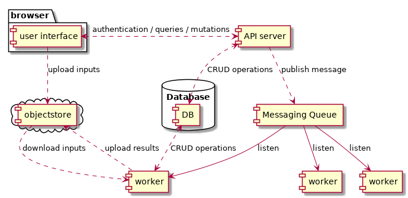
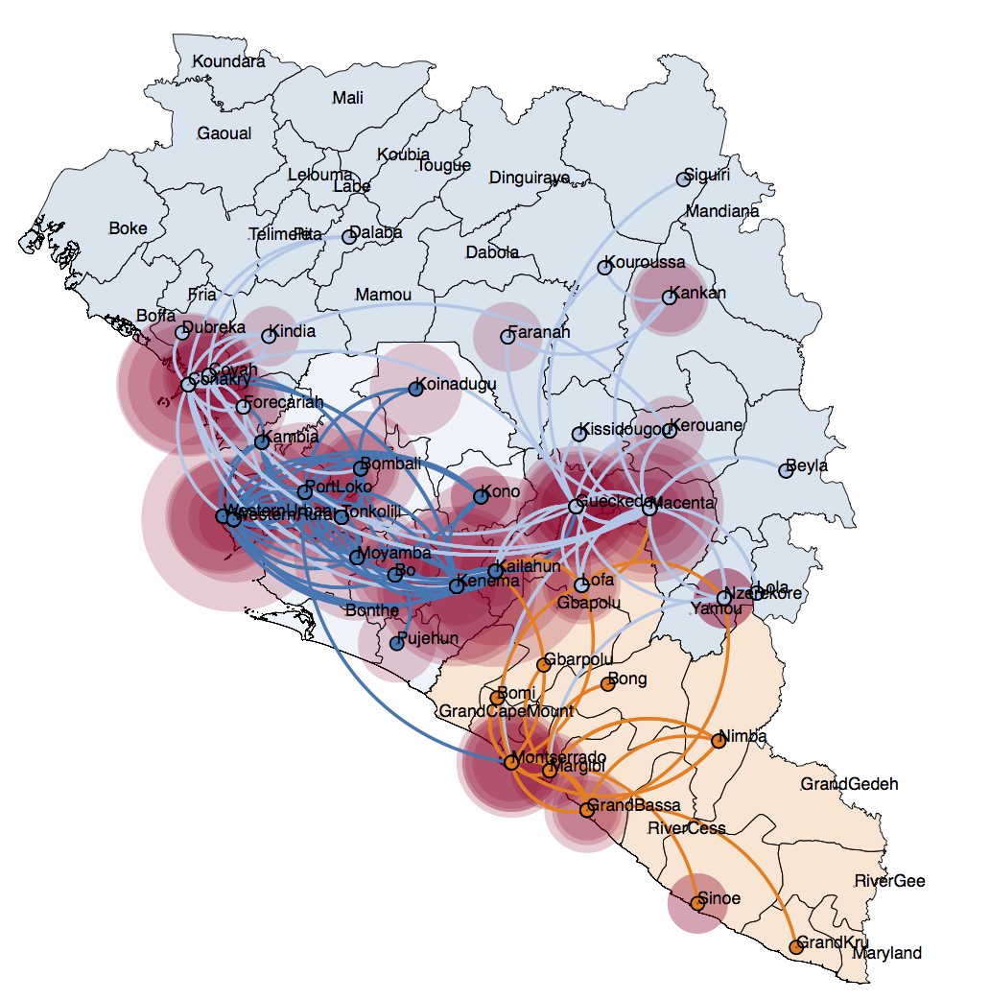
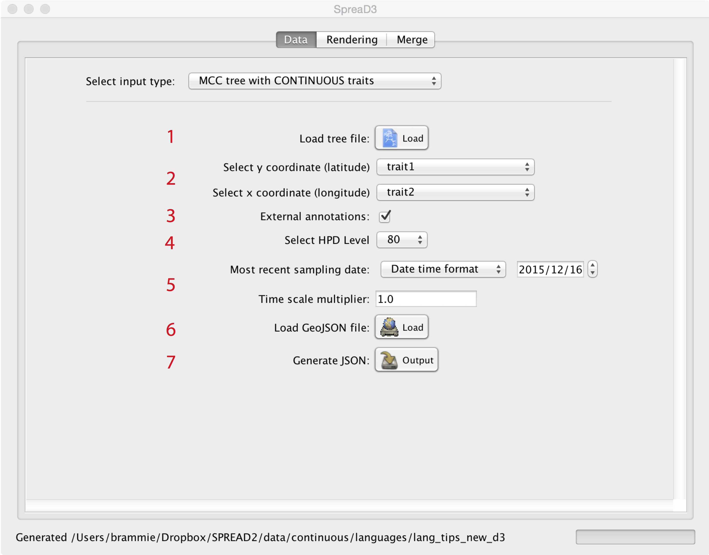
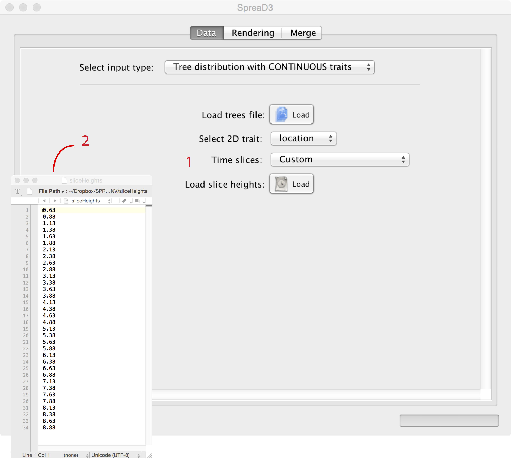
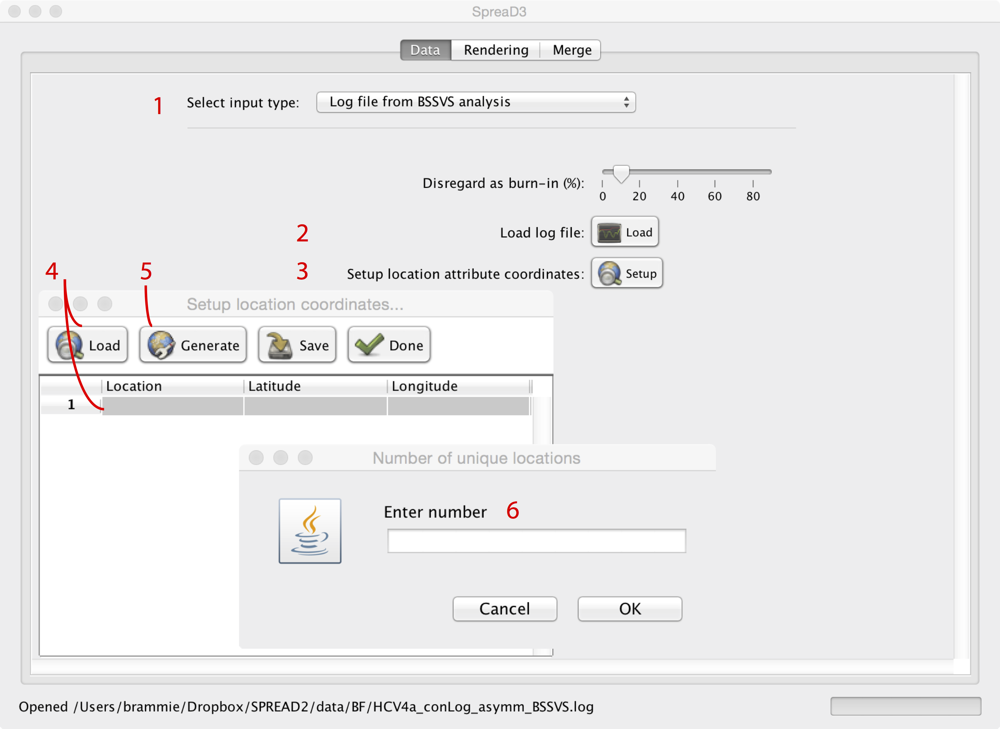

Spread: UI/UX document
Table of Contents
- 1. DONE Introduction
- 2. DONE System architecture overview
- 3. DONE User-interface functional requirements
- 3.1. DONE General considerations
- 3.2. DONE authentication
- 3.3. DONE Analysis and input types
- 3.3.1. DONE General considerations
- 3.3.2. DONE Visualizing an MCC tree annotated with continuous traits
- 3.3.3. DONE Visualizing a distribution of trees annotated with continuous traits
- 3.3.4. DONE Visualizing an MCC tree annotated with discrete traits
- 3.3.5. DONE Identifying well-supported rates through Bayes factor tests
1 DONE Introduction
This document describes the main conceptual characteristics of the User Interface for the system meant to replace the existing legacy software package for visualizing phylogeographic reconstructions called SPREAD. It’s target audience are the stakeholders, UI/UX designers and the developers of the new system. This document is subject to change.
2 DONE System architecture overview
The diagram below presents the main components making up the system:

As can be seen from the system architecture SPREAD is a queue based system, with the Server component responsible for reading and writing to the Database as well as publishing messages to the queue. A configurable number of workers compete for these messages and act on them. Once a worker picks up a message, it updates the state accordingly by performing a Database write and starts the compute-intensive parsing and analysis. After it’s done it writes the state to the Database and uploads the resulting objects to the S3 Object storage. System can be scaled horizontally by increasing the number of workers.
The User Interface is responsible for keeping this architecture transparent to the end-user. It acts as a facade for comunicating with the server and facilitates interacting with the server by displaying the database state as it comes by querying the server. It is also responsible for uploading input files that are used by the workers in the analysis.
3 DONE User-interface functional requirements
3.1 DONE General considerations
- User authentication and management.
- A minimal number of steps to obtain visualization.
- The ability to retrieve and edit previous analyses.
- Sharing of visualizations through URLs.
3.2 DONE authentication
User authentication will be implemented by a mechanism knows as “magic links”, where the email is used as a sole identity provider (system will not track nor need other fields).
When the user first comes into the interface he/she is greeted with a login / signup form which takes user email as the only credential. Regardless of whether this is a signup or login of an already existing user, an email is sent containing a link with an attached token. Clicking on the link takes the user back to the interface and confirms the identity. A long-lived auth cookie is set in browser for future sessions. After the validity of this cookie runs out user needs to authenticate again with the system.
Figure 2: Example login / signup form
3.3 DONE Analysis and input types
3.3.1 DONE General considerations
System will be responsible for processing four distinct input types:
- Visualizing an MCC tree annotated with continuous traits
- Visualizing a distribution of trees annotated with continuous traits
- Visualizing an MCC tree annotated with discrete traits
- Identifying well-supported rates through Bayes factor tests
These inputs are typically annotated with geographical coordinates in it’s meta-data, and subsequently used for displaying the results on a map. A visualisation of an input means parsing and analyzing it to produce an intermediate format, which is then understood by the visualisation engine, which displays the results on a map. The interface should make this division transparent to the end user and guide him through the analysis that results in the visualisation, without exposing intermediate steps.

Figure 3: Example visualisation
Authenticated users should be able to come back to the previous analysis, retrieve, change or re-uplaod the inputs and the settings as well as create or delete content.
The fact that system is using a queue for processing inputs means the results are not immediately availiable (the typical request / response pattern is not possible). Components of the system will keep track and update the current state of the analysis such that the server will be able to repond at any given point in time what is the status, by using enumerated response codes e.g : `:INIT`, `:SENT`, `:QUEUED`, `:RUNNING`, `:SUCCEEDED` or `:ERROR`.
The interface should make it possible to query for updates or even establish a poll that reflects that.
3.3.2 DONE Visualizing an MCC tree annotated with continuous traits

Figure 4: Inputs tab in legacy software
This type of analysis accepts a file with a single tree (a graph) as an input. After uploading the file server component calls a worker to pre-traverse it and collect all unique attribute names. User than selects the attributes that carry geographical coordinates (longitude / latitude) and can change various other settings to obtain a visualisation.
Your browser does not support the video tag.
3.3.3 DONE Visualizing a distribution of trees annotated with continuous traits

Figure 5: legacy software
This analysis summarizes a distribution of trees. To achieve this, SpreaD3 creates a time line by slicing through each tree graph at particular points in time, and computes the geographical locations in those slices. These time points can either be supplied by the user (as a list of decimal values), or generated based on a height of single tree (supplied in a file) or finally from the distribution of trees itself, by taking the maximal height and generating uniformly distributed numbers between 0 and that number.
The input files can be relatively large and the entire analysis can be relatively time-consuming (as well as CPU intensive).
Your browser does not support the video tag.
3.3.4 DONE Visualizing an MCC tree annotated with discrete traits

Figure 6: Inputs tab in legacy version
In this type of analysis tree is annotated with a finite number of locations labelled by their names. To display it on the map, each one of these states needs to be associated with a geographical location (latitude and longitude coordinates).
For this user can use a built-in editor and fill them in or load a previously prepared tab-delimited file including each location, its latitude and longitude.
Your browser does not support the video tag.
3.3.5 DONE Identifying well-supported rates through Bayes factor tests

Figure 7: Inputs tab in legacy version
This analysis takes a log file generates by the BEAST software package, and calculates a Bayes factor support for each pairwise rate of diffusion between locations from samples in that log file. Although this analysis too makes it possible to obtain a visualisations on a geographical map, most users are mainly interested in the support values calculated.
If a visualisations is to be generated user needs to provide a mapping between locations and coordinates for a display on the map, in other case just the number of these locations is required. Resulting rates of support for pairwise connections look like this:
| FROM | TO | BAYES_FACTOR | POSTERIOR PROBABILITY |
|---|---|---|---|
| Guangdong | Henan | 0.49024749921100813 | 0.18656302054414214 |
| Guangdong | Hunan | 0.3020727841804354 | 0.12382009994447529 |
| Guangxi | Hebei | 0.5811807357716423 | 0.21377012770682954 |
| Guangxi | Hunan | 1.3275435166126814 | 0.38312048861743475 |
Your browser does not support the video tag.